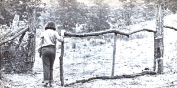
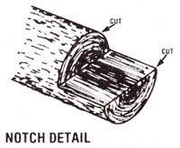

A pair of West Virginia shepherds found that leftovers shouldn't be left unused!
When my partner and I first brought sheep to our farmstead, we soon discovered that the woolly wanderers loved to visit our hayfield for an occasional snack. We had to install fences, but-by the time my friend and I had finished enclosing the critters in our pastures and out of the young hay-we'd purchased thousands of feet of woven wire and used up all of our spare cash in the process. What's worse, the gaping hole in our bank account was matched by equally gaping holes in our fencing ... spaces where gates should have been.
In an attempt to solve the problem, we checked out some sturdy metal gates available at our local feed store, and we immediately realized that-at $60 apiece-they'd have to remain right there! Next we looked into the possibility of constructing our own wooden entryways, but discovered that the cost of the 1 X 6 lumber required to complete the project would also be beyond the abilities of our sorely depleted funds.
Eventually we did find a practical (and affordable!) alternative, however, and now our farmstead has openers as handy and strong as the shiny hardware-store kind. And best of all, our gates were tree!
We had numerous scraps of woven wire, you see . .. left over from the 11 rolls it took to enclose our acreage. And the seasoned locust posts that supported the fence had been cut from the larger ends of medium-sized trees, while the branches and smaller tops remained unused.
So my resourceful friend figured out a way to turn the pile of leftovers into beautiful, rustic gates. To make each closure, he first cut two locust poles (from the branches and treetops), each just a few inches shorter than the width of the opening in the fence. These limbs would soon become the gate's top and bottom framing pieces. Next, he cut three sticks to a length of almost four feet apiece . . . which was the height of the fence and of the soon-to-be-swinging door.
My friend then notched both ends of all five locust limbs by making a ripsaw cut -a few inches deep-down the center of each tip, and a second cut to meet this slice at a 90° angle (as shown in the accompanying diagram). Together we set the longer branches on the ground-parallel-with the notches up. We next put two of the short sticks on top of the longer ones, notches down, so that the cut-outs on the vertical sticks were resting on those of the horizontal ones. We fastened the joints with very long, heavy nails and, since the points of the spikes usually came through on the other side of the posts, hammered the metal back against the wood.
That done, we placed the remaining short pole in the center of the gate (parallel to the ends) and made a mark on each side of the wood where it rested on the top and bottom frames. My friend cut a dado notch in both the upper and lower members, and the short post-notches down-was fitted in place and secured with nails.
We finished up our job with a section of woven-wire fencing-cut a bit longer than the length of the frame-that we first attached, with staples, along the bottom and up one side of each gate. We then stretched the mesh over to the other side and stapled it there . . . and, finally, pulled the wire taut at the top and secured it with the metal fasteners. (Any excess wire was bent as close as possible to the poles.)
After we carried our gates to the fence, we secured each in its place with salvaged scrap hinges . . . which were bent to fit the unique contours of each locust limb. (An alternate method-workable but less convenient-is to attach the gates with good old-fashioned baling twine, and then simply untie one side to gain access.)
The latches we added to our "pasture doors" were also homemade. We used old nails and short lengths of scrap chain, which we fastened at a convenient height on the up-and-down post at each gate's end. After hammering a nail partway into the fencepost next to the chain, we bent the fastener into a "V" shape.
To close or open a gate, we merely slide a link of the chain on or off the nail. The crooked spike prevents the chain from slipping off until we want it to.
Our six "scrap-pile gates" have been in constant use for over a year now, and we guarantee that they work every bit as well as their $60 counterparts!
|
 |
 |
|